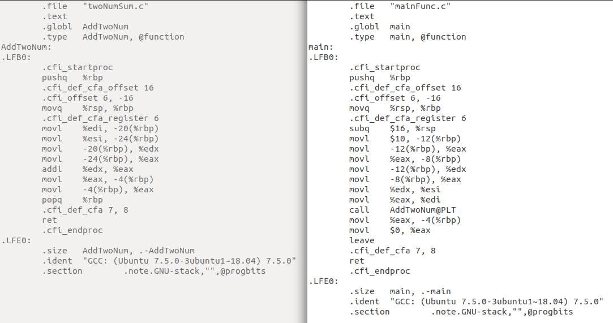

编译链接简介
前言
我们都知道，机器上运行的程序都是二进制程序，但是我们编写的 C 语言代码却是由一个个字符加上某些规则“装配”而成的文本文件，这些文本文件是怎么样转换为二进制程序的呢？这里面可有大奥秘！从 C 源码文件到二进制文件，大概经历了以下几个过程：
下面通过一个例子来分析，这是写好的三个源码文件，三个源码文件均放在用一个目录下：
1 | // mainFunc.c |
如果直接在命令行中输入：
1 | gcc mainFunc.c twoNumSum.c -o a.out |
则文件夹下会多出一个 a.out 文件，该文件就是经过 gcc 编译得到的在 Linux 上二进制可执行文件。事实上，该过程在背后其实执行了四个步骤，分别是预处理、编译、汇编和链接，而 gcc 命令也只是这些步骤对应的后台程序的包装。那么具体这四个阶段发生了什么呢，我们一一来看。
预处理（预编译）
首先在预处理阶段，可以通过以下命令来让 gcc 调用预处理器（cpp），生成预处理后的 .i文件：
1 | gcc -E mainFunc.c -o mainFunc.i |
生成的 .i 文件如下图：
其实，预处理过程主要是处理源代码文件中的以 “#” 开始的预编译指令，主要处理规则如下：
- 将所有的 “#define” 删除，并且展开所有的宏定义
- 处理所有条件预编译指令，比如 “#if”、”#ifdef”、“#ifndef”、“#else”、“#endif”等。
- 处理 “#include” 预编译指令，将被包含的文件插入到该预编译指令的位置。
- 删除所有的注释。
- 添加行号和文件名表示，以便编译时编译器产生调试信息。
- 保留所有的 “#program” 编译器指令，因为编译器要使用他们。
编译
编译过程就是编译程序（ccl）把预处理完的文件经过一系列分析生成相应的 .s 汇编代码文件。对应命令如下：
1 | gcc -S mainFunc.i -o mainFunc.s |
生成的 .s 文件如下图：

当然，编译过程的细枝末节也是一门大学问了！
汇编
对于上述生成的 .s 文件中的汇编代码，机器自然是无法执行的，那汇编阶段就是汇编器（as）将上述的汇编代码汇编成机器可以执行的二进制代码，生成 .o 目标文件。汇编的过程是很简单的，没有复杂的语法，只需要根据汇编指令和机器指令的对照表一一翻译就可以了。对应命令如下：
1 | gcc -c mainFunc.s -o mainFunc.o |
此时生成 .o 就不能用编辑器打开查看内容了，但是我们可以键入 ubuntu 下的 file 命令来看看该文件的基本属性：
发现生成的 .o 文件是 ELF 可重定位文件，ELF 其实就是 Linux 操作系统下的一种文件的格式，主要有可重定位文件，可执行文件和共享文件。
链接
回想刚刚的 main 函数，其中调用了 TwoNumSum 这个函数，哎不对，经过预处理后，明明 main 函数文件内也仅仅包括了 TwoNumSum 函数的声明，并没有它的实现，那 main 函数是怎么实现调用的呢，其实这里就是链接器（ld）发挥作用的时候了。 链接器就是负责把各个模块之间相互引用的部分处理好，使得各个模块之间可以正确地衔接，然后生成可执行二进制程序。对应命令如下：
1 | gcc mainFunc.o twoNumSum.o -o a.out |
这样就生成了可执行文件 a.out，如果输入 ./a.out会发现 shell 没有任何反馈，但是 a.out 一定是在机器内执行了哦，只是我们让他产生输入输出结果而已啦！况且，根据 Linux 哲学，没有反馈就是最好的反馈嘛。
总结
可以看到，两个源代码文件 mainFunc.c 和 twoNumSum.c 从预处理到编译到汇编都是单独进行的，直到链接的时候才会拼接到了一起生成最终的可执行文件 a.out 。到这里，应该对编译链接干了啥有个初步的了解了，编译链接本身是一个庞大的知识体系，如果对其有兴趣，可以查阅相关资料自行学习。